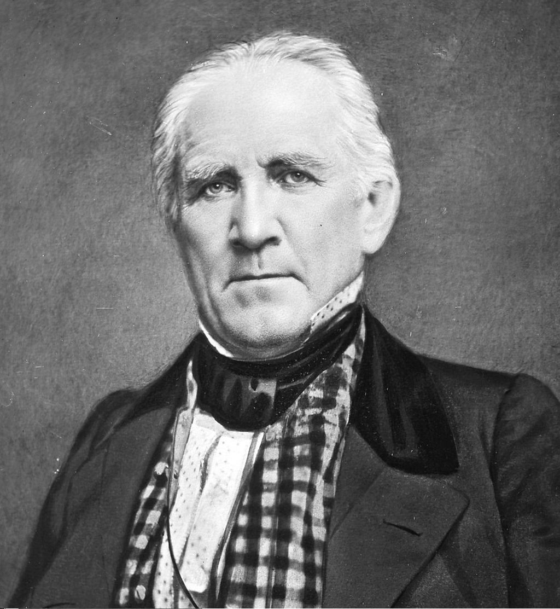

Хьюстон
Хьюстон
Хьюстон (англ. Houston) - четвертый по количеству жителей город в Соединенных штатах Америки и крупнейший
город в штате Техас с населением 2,319,603 человека на 2017 год. Хьюстон является административным центром округа Харрис, а
также главным экономическим центром агломерации Большого Хьюстона, занимающего пятое место среди агломераций по населению с общей численностью 7 122 240 человек
по результатам переписи 2020 года. Город располагается в 50 километрах от Мексиканского залива на прибрежной равнине.
Хьюстон был основан 30 августа 1836 года и включён в состав республики Техас 5 июня 1837 года, получив своё имя в честь Сэмюэла Хьюстона — главнокомандующего армией
Техаса во время Техасской революции и президента Республики Техас. Быстрое развитие порта и железных дорог в XIX веке, а также начало добычи нефти и последовавшее развитие
нефтяной промышленности в XX веке привели к быстрому росту населения. В 1960-е годы количество жителей превысило один миллион человек, а в 2000-е — два миллиона.
Город является ведущим мировым центром энергетической промышленности, а экономика города также представлена предприятиями в области аэронавтики, транспорта и
здравоохранения. Важнейшими объектами для экономики и инфраструктуры города являются космический центр имени Линдона Джонсона, крупнейший американский по
международным грузоперевозкам по рт, хьюстонский судоходный канал, крупнейший в мире Техасский медицинский центр.
Содержание
- История
- Этимология, прозвища
- Основание
- ХХ Век
- Физико-географическая характеристика
- Географическое положение и климат
- Рельеф, внутренние воды
- Флора и фауна
- Экономика
- Общее состояние
- Энергетика и нефтехимия
- Авиакосмическая промышленность
- Население
- Динамика и структура населения
- Этнический и конфессиональный состав, языки
- Средства массовой информации
- Города-побратимы
История
Этимология, прозвища

Сэмюэл Хьюстон
Город назван в честь Сэмюэла Хьюстона — главнокомандующего армией Техаса во время Техасской революции (1835—1836) и президента Республики Техас (1836—1838, 1841—1844).
Официальное прозвище Хьюстона — «Space city», которое можно перевести, как «космический город», «город космонавтики» или «космоград».
Название дано из-за того, что здесь находится космический центр имени Линдона Джонсона. Всего город имеет 12 прозвищ.
В американской разговорной речи есть популярная фраза: «Хьюстон, у нас проблема» (англ. Houston, we’ve had a problem), появившаяся после неудачной миссии Аполлон-13.
В Хьюстоне проходили съёмки фильма «Аполлон-13», в основу сюжета которого легли реальные события миссии.
Основание
 Allen’s Landing — место, где был основан город
Allen’s Landing — место, где был основан город
После окончания войны за независимость Техаса, в августе 1836 года предприниматели братья Август и Джон Аллены купили 26,9 км² земли вдоль реки Буффало-Байю, планируя основать на ней населённый пункт.
Они хотели, чтобы будущий город стал столицей Техаса и крупным торговым центром.
Датой основания города принято считать 30 августа 1836 года, когда братья Аллены разместили объявление о появлении города.
Город назвали в честь генерала Сэма Хьюстона, возглавлявшего армию техасцев в битве при Сан-Хасинто во время войны против Мексики, позже избранного президентом Техаса.
На январь 1837 года в посёлке проживало всего 12 человек, однако через четыре месяца население возросло до 1500 человек.
5 июня 1837 года город был включён в округ Гаррисберг (ныне Харрис) и стал временной столицей Республики Техас, которой оставался до 1839 года.
Первым мэром Хьюстона стал Джеймс Холман.
XX Век